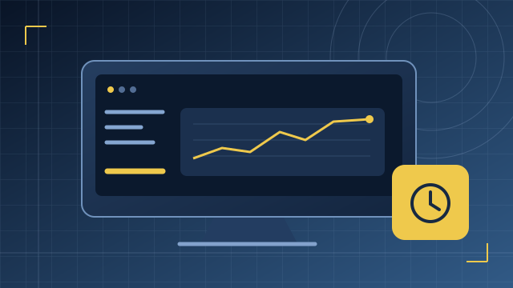
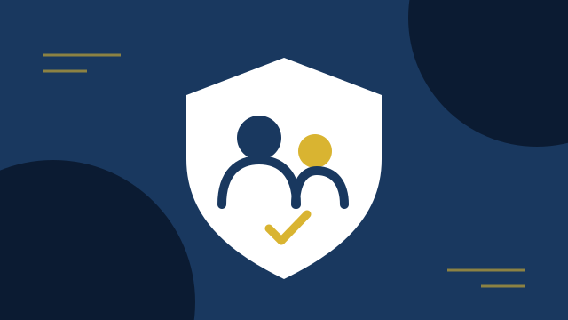
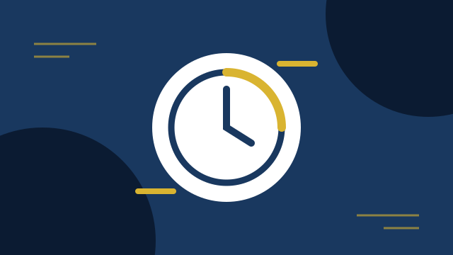
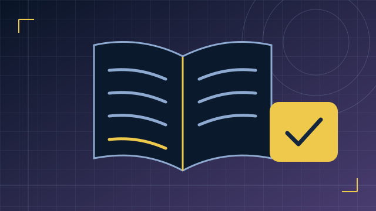

Калькулятор тренувань
Склади заняття з розминки, вправ і матчів під час, який маєте.
Розрахувати план«КіберЛьвів» — навчальний проєкт. AI-плани, заняття з наставниками й звіти прогресу — частина концепції. Про можливості сайту й плани розвитку.
Склади план, оберіть вправу або знайдіть поради. Натисни на ілюстрацію, щоб переглянути розділ перед переходом.

Склади заняття з розминки, вправ і матчів під час, який маєте.
Розрахувати планОберіть CS2, Dota 2 або Valorant і знайдіть вправи для своєї навички.
Обрати програму

Дізнайся, як планувати практику, робити перерви та розбирати матчі.
Почитати поради
Простий шлях від вибору гри до конкретних рекомендацій. Жодної зайвої теорії, лише практика.
Оберіть гру, фокус практики та кількість матчів або доступний час.
Побачиш тривалість вправ, матчів, очікування, аналізу та перерв.
Скоригуйте параметри або завантажте план. Висновки після заняття записуйте самостійно.
Програми вище підходять для самостійної практики. Якщо хочете обговорити заняття з наставником, порівняйте пакети та ціни.
Порахуйте час одного заняття та тижня: вправи, повні матчі, аналіз, очікування й перерви.
Спробуйте на прикладі CS2. Гру й навичку можна змінити у повному калькуляторі.
Оберіть фокус практики та задай тривалість блоків. Структуру можна змінити перед наступним заняттям.
Порівнюй повний час із часом вправ, матчів та аналізу. Очікування й перерви враховані окремо.
Поверніться до параметрів після практики й уточніть свій план. Історія виконання на сайті не зберігається.
Поділись, що допомогло у тренуванні та чого бракує на сайті.
Нижче — демонстраційні приклади, а не відгуки реальних користувачів.
Зручніше бачити окремо час на розминку, вправи та розбір матчу.
Приклади дають конкретну вправу для старту. Хотілося б більше варіантів для новачків.
Гід допомагає обговорити ігровий час та домовитися, коли завершувати заняття.
Чернетка, видима лише в цьому браузері.
Напишіть, якщо результат калькулятора незрозумілий, помітив помилку на сайті або хочете запропонувати нову вправу.